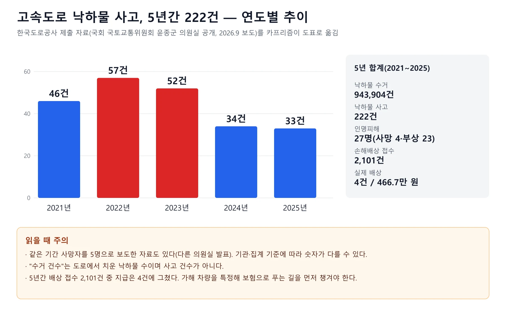
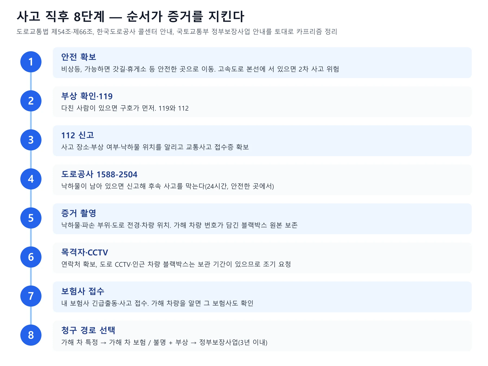
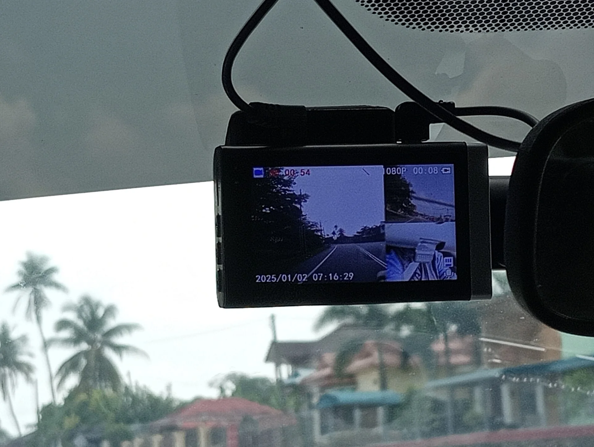
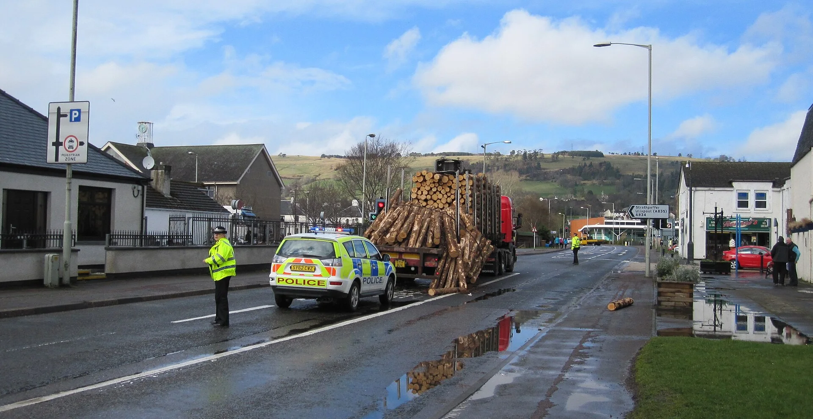
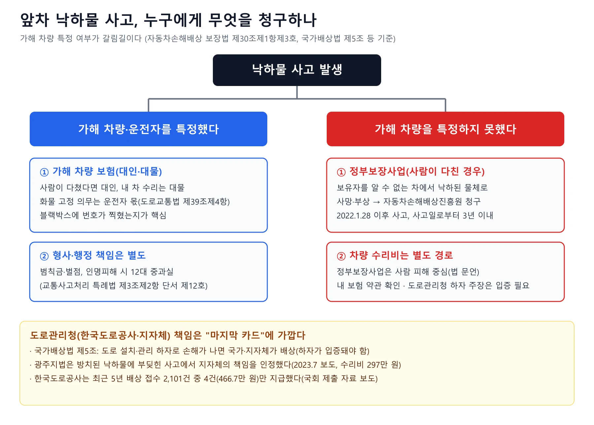
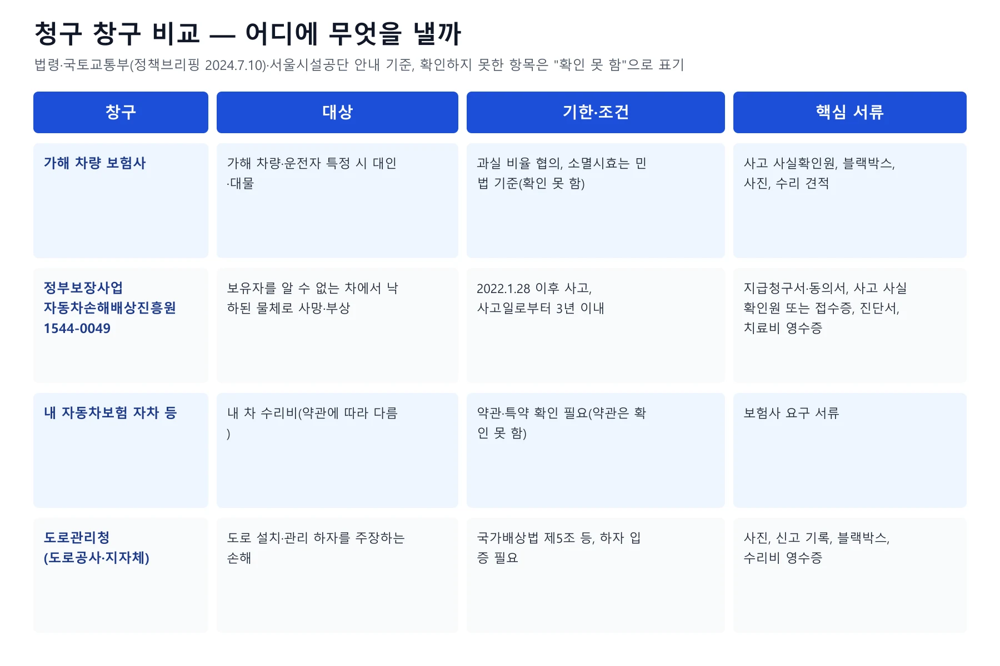
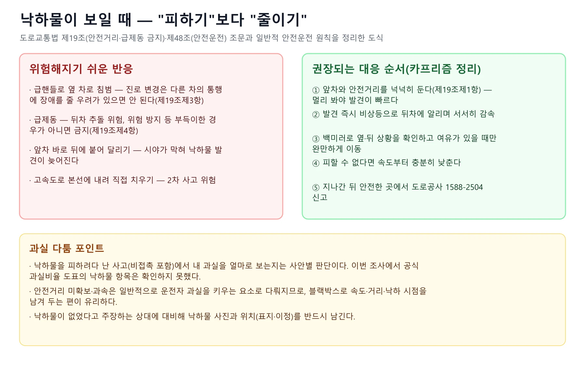
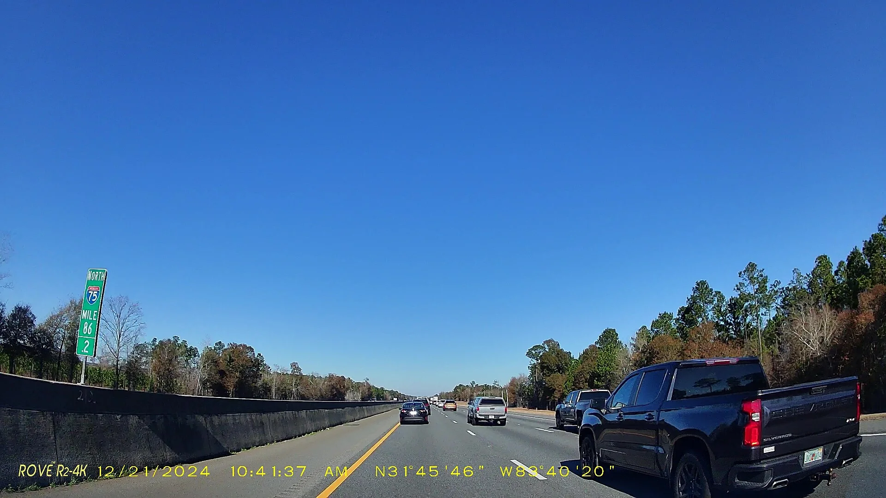
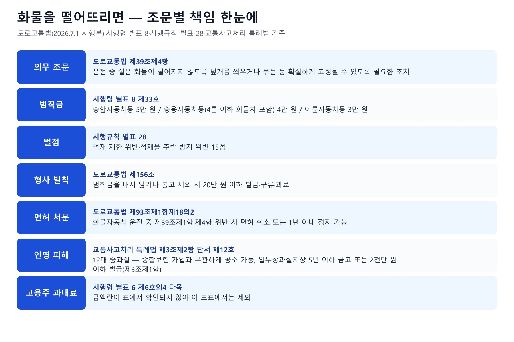

▲ 목재 운반 트럭이 적재물 일부를 도로에 쏟은 현장(스코틀랜드 사례). 화물이 떨어지지 않도록 고정하는 것은 운전자의 법적 의무다(도로교통법 제39조제4항) ⓒ Glen Wallace, Wikimedia Commons (CC BY-SA 2.0)
"앞 트럭에서 뭔가 떨어졌는데 피할 틈이 없었다. 그런데 그 트럭은 이미 사라졌다." 낙하물 사고는 가해자가 보이지 않는 순간 대응이 막막해진다. 이 글은 2026년 10월 12일 기준으로 국가법령정보센터 Open API에서 도로교통법(시행 2026.7.1)·시행령(시행 2026.10.2)·시행규칙(시행 2026.8.24), 도로법(시행 2026.9.18), 자동차손해배상 보장법(시행 2026.10.2), 교통사고처리 특례법(시행 2025.6.4), 국가배상법 원문을 내려받아 조문을 대조했고, 정부보장사업은 국토교통부 안내(정책브리핑 2024.7.10), 통계는 한국도로공사 제출 자료를 인용한 2026년 9월 언론 보도를 확인했다. 확인하지 못한 항목은 "확인하지 못했다"로 적었고, 개별 사고의 과실비율과 책임은 보험사 협의나 법원이 판단하므로 단정하지 않는다. 사고 직후 일반 대응은 사고 현장 대응 체크리스트, 도주 차량은 뺑소니 초기 대응 기사, 갓길 대피는 갓길 2차 사고 기사에서 다뤘으므로, 여기서는 "떨어진 짐 때문에 사고가 났을 때 누가 책임지고 어디에 청구하나"에 집중한다.
1. 책임의 출발점 — 화물 고정 의무와 "누가 가해자인가"
낙하물 사고의 1차 책임은 화물을 싣고 달린 운전자(와 적재·고정을 맡은 사람)에게 있다는 것이 법 구조다. 도로교통법 제39조제1항은 대통령령이 정한 적재 안전기준을 넘겨 싣고 운전하지 못하게 하고, 제4항은 "운전 중 실은 화물이 떨어지지 아니하도록 덮개를 씌우거나 묶는 등 확실하게 고정될 수 있도록 필요한 조치"를 하라고 정한다. 시행령 제22조의 적재 안전기준은 화물자동차의 적재중량을 구조·성능상 적재중량의 110퍼센트 이내로, 높이는 지상 4미터(고시한 노선은 4미터 20센티미터) 이내로 정한다. 즉 과적과 고정 불량은 서로 다른 조항이지만 낙하물 사고에서 함께 문제 되는 경우가 많다.
▲ 목재 운반 트럭이 적재물 일부를 도로 옆으로 쏟은 현장(스코틀랜드 사례). 이런 낙하는 뒤따르는 차량에게 피할 틈을 주지 않는다 ⓒ Glen Wallace, Wikimedia Commons (CC BY-SA 2.0)
| 주체 | 근거 | 내용 |
|---|---|---|
| 화물 운전자 | 도로교통법 제39조제1항·제4항 | 적재 안전기준 준수, 낙하 방지 고정 의무. 위반하면 범칙금·벌점, 인명 피해 시 12대 중과실 |
| 차량의 운행자(보유자) | 자동차손해배상 보장법 제3조 | 자기를 위하여 자동차를 운행하는 자는 그 운행으로 다른 사람을 사망·부상하게 한 경우 손해를 배상할 책임을 진다(조문상 인적 피해에 한정). 차량 파손 같은 물적 손해는 이 조문이 아니라 민법 제750조(불법행위) 등 일반 법리로 다뤄진다 |
| 고용주등 | 도로교통법 제56조, 시행령 별표 6 | 운전자에게 법을 지키도록 항상 주의시키고 감독할 의무(제56조제1항). 시행령 별표 6 제6호의4 다목이 제39조제4항 위반 차의 고용주등을 과태료 대상으로 열거하지만, 공식 별표의 금액란은 비어 있다 |
| 도로관리청 | 국가배상법 제5조, 도로법 제75조 | 도로 설치·관리 하자가 입증될 때 국가·지자체 배상. 도로에 장애물을 쌓아놓는 등 교통에 지장을 주는 행위는 도로법 제75조가 금지 |
📍 "내 책임은 0%"가 항상 인정되는 것은 아니다
낙하물 사고는 앞차와의 거리·속도·회피 여부에 따라 내 과실이 따져질 수 있다. 이 글을 쓰며 손해보험협회 과실비율 인정기준에 낙하물 전용 도표가 있는지 공식 문서에서 열어 확인하지는 못했다. 과실은 양측 보험사 협의와 분쟁 시 심의·소송으로 정해지므로, 처음부터 블랙박스 원본과 현장 사진으로 상황을 남겨 두는 것이 안전하다. 일반적인 과실 분담 원리는 과실비율 기사를 참고하자.
2. 숫자로 보는 낙하물 — 5년 222건, 그런데 배상은 4건
최근 5년(2021~2025년) 고속도로 낙하물 사고는 222건, 인명피해 27명(사망 4명·부상 23명)으로 보도됐다. 이 수치는 한국도로공사가 국회 국토교통위원회 윤종군 의원실에 제출한 자료를 인용한 2026년 9월 15일자 보도(신아일보)와 경북신문 보도에서 일치했다(신아일보는 합계, 연도별·사망/부상 구분은 경북신문 보도 기준). 연도별 사고는 2021년 46건, 2022년 57건, 2023년 52건, 2024년 34건, 2025년 33건이다. 도로에서 수거된 낙하물은 같은 기간 94만 3,904건으로 연 16만~20만 건대다. 다만 수거 건수는 사고 건수가 아니다. 한편 뉴스1은 2026년 9월 26일 정동만 의원 언급을 인용해 최근 5년여간 낙하물 사망 5명, 부상 23명으로 보도해 사망자 수가 보도마다 다르다. 집계 기준이 다를 수 있어 이 글은 한국도로공사 제출 자료로 보도된 4명을 쓰고 5명 보도가 있다는 점을 함께 적는다.

▲ 한국도로공사 제출 자료로 보도된 최근 5년 낙하물 사고. 사고는 줄었지만 배상으로 이어진 건 접수 2,101건 중 4건이다 (카프리즘 제작 도표) ⓒ 카프리즘 제작 도표(데이터: 한국도로공사 제출 자료, 신아일보·경북신문 보도)
| 항목 | 수치 |
|---|---|
| 낙하물 수거 | 943,904건 (2021년 197,918 · 2022년 198,950 · 2023년 200,913 · 2024년 177,491 · 2025년 168,632) |
| 낙하물 사고 | 222건 (46·57·52·34·33) |
| 인명피해 | 27명 (사망 4명, 부상 23명) |
| 손해배상 | 접수 2,101건 중 실제 배상 4건, 지급 총액 466만 7천 원 |
이 숫자가 말하는 실용적 교훈은 분명하다. 도로관리청에 배상을 청구하는 경로는 접수 대비 지급 비율이 매우 낮게 보도됐으므로, 가해 차량을 특정하는 일이 가장 중요하다. 보도에는 배상 거절 사유별 내역이 없어, 왜 4건만 지급됐는지는 확인하지 못했다. 수치는 어디까지나 국회 제출 자료의 보도 인용이며, 공식 통계 원문(한국도로공사 공개 자료)은 이번에 직접 열어 보지 못했다.
3. 사고 직후 8단계 — 신고와 증거가 청구의 전부다
순서는 "안전 확보 → 부상자 → 112 → 도로공사 → 증거 → 보험사"다. 도로교통법 제54조는 교통사고를 낸 운전자에게 즉시 정차해 구호와 인적사항 제공, 경찰 신고를 하도록 정한다. 낙하물 피해 운전자는 이 의무의 주체가 아닐 수 있지만, 청구 단계에서 경찰의 교통사고 사실확인원 또는 접수증이 필요하므로 신고는 사실상 필수다(국토교통부 정부보장사업 안내의 필요 서류). 고속도로에서 차를 운행할 수 없게 됐다면 도로교통법 제66조에 따라 고장자동차 표지를 설치하고 차를 다른 곳으로 옮기는 등 필요한 조치를 해야 한다. 삼각대 기준은 삼각대·불꽃신호기 기사에 정리했다.

▲ 낙하물 사고 직후 8단계 순서도 (카프리즘 제작 도표) ⓒ 카프리즘 제작 도표(근거: 도로교통법 제54조·제66조, 한국도로공사·국토교통부 안내)
1588-2504, 어떻게 쓰나
한국도로공사 콜센터 1588-2504는 24시간 운영되며, 교통사고·노면 잡물·긴급견인·로드킬·시설물 파손 등을 신고할 수 있다고 2026년 4월 8일자 보도(파이낸셜뉴스)에 소개됐다. 같은 보도는 주행 중이 아니라 휴게소·졸음쉼터 같은 안전한 곳에서 전화하고, 안내에 따라 위치정보 제공에 동의해야 하며, 접수 내용은 인근 지사 교통상황실로 전달돼 조치된다고 전한다. 이 기사에서 낙하물을 신고하면 후속 사고를 줄일 수 있다는 점은 분명하지만, 신고 접수가 법적 배상 책임을 의미하는 것은 아니다. 콜센터 안내 보도 바로가기
📍 "신고 포상" 이벤트 — 2026년 4~12월 보도 기준
같은 보도에 따르면 한국도로공사는 2026년 4월부터 12월까지 "고속도로 안전골든콜 포상 이벤트"를 진행한다고 한다. 월별 추첨, 분기별 최다 제보자 포상에 더해 올해 새로 연간 우수 제보자 5명을 선정해 최대 50만 원을 지급한다고 소개됐다. 월·분기 포상 금액과 낙하물 목격 신고의 개별 포상 조건은 이번에 확인하지 못했으므로, 신청 전 한국도로공사 공식 안내를 확인하자.
증거 — 번호가 찍힌 영상이 가장 강하다
아주경제(2024.11.11)는 물건이 떨어지는 장면만으로는 증거가 부족하며 가해 차량 번호가 뚜렷이 찍힌 영상이 가장 좋다고 정리했다. 이 점은 청구 구조와 맞닿아 있다. 번호를 알아야 보험사를 특정할 수 있고, 모르면 정부보장사업으로 넘어가야 한다. 영상 제출 요령은 블랙박스 영상 경찰 제출 기사에서 다뤘다.

▲ 블랙박스는 사고 순간의 속도·거리·낙하 시점을 남기는 사실상 유일한 증거다. 번호판이 읽히는 전방 영상 원본을 덮어쓰기 전에 따로 저장하자 ⓒ Danielrayyan09, Wikimedia Commons (CC BY 4.0)
✅ 낙하물 사고 증거 체크리스트
· 낙하물 본체: 크기가 가늠되도록 주변 사물과 함께 근거리·원거리 사진(위치 표지·이정이 보이게)
· 파손 부위: 근거리·원거리 사진(타이어·휠은 장착 여부가 확인되게. 서울시설공단 안내 기준)
· 영상 원본: 사고 전후 영상을 덮어쓰기 전에 별도 저장, 영상의 날짜·시각 일치 여부 확인
· 112 접수번호·사실확인원: 청구 서류에 필요
· 목격자·인근 차량: 연락처, 블랙박스 보유 여부
· 수리 영수증: 견적서만 제출하면 입증자료로 불인정되는 안내도 있다(서울시설공단 자동차전용도로 배상청구 안내)
4. 보험 처리 — 가해 차를 알면 대인·대물, 모르면 갈림길
가해 차량과 운전자를 특정했다면 그 차의 보험(대인·대물)에 청구하는 것이 기본 구조다. 사람이 다쳤다면 가해 차의 책임보험·종합보험의 대인배상(자동차손해배상 보장법 제3조), 내 차가 파손됐다면 대물배상(민법 제750조 등 일반 불법행위 책임)이 문제 된다. 가해 운전자가 법 제39조제4항을 위반했다면 인명 피해에서는 교통사고처리 특례법 제3조제2항 단서 제12호의 중과실로 다뤄진다. 특례법 제4조제1항은 보험·공제에 가입된 경우 공소를 제기할 수 없다고 하면서도 제3조제2항 단서에 해당하는 경우(제1호)는 예외로 둔다. 따라서 종합보험에 가입돼 있어도 형사 책임이 면제되지 않을 수 있다. 개별 사건 결과는 수사기관 판단이다.

▲ 낙하물이 도로를 막으면 경찰이 현장을 통제한다. 현장 경찰의 사실확인은 이후 보험·정부보장 청구의 기본 서류가 된다(스코틀랜드 사례) ⓒ Glen Wallace, Wikimedia Commons (CC BY-SA 2.0)

▲ 낙하물 사고 청구 흐름도. 특정했으면 가해 차 보험, 못했으면 정부보장사업과 별도 경로 (카프리즘 제작 도표) ⓒ 카프리즘 제작 도표(근거: 자동차손해배상 보장법 제30조, 국가배상법 제5조 등)
내 보험(자차)으로 먼저 고치는 경우
수리를 서둘러야 하거나 가해 차가 불명일 때 내 자동차보험 자기차량손해 특약으로 수리하는 선택지가 일반적으로 거론된다. 다만 낙하물 충돌이 자차 담보에 포함되는지, 자기부담금과 보험료 할증이 어떻게 되는지는 보험사별 약관에 따르며 이번에 약관 원문은 확인하지 못했다. 보험사에서 사고 접수 후 담당자에게 "낙하물 사고, 가해 차량 불명"이라고 정확히 밝히고 처리 방식을 서면으로 확인하자. 합의·정산 협상 요령은 사고 합의 협상 기사, 수리 기간 렌터카는 사고 렌터카 기사가 참고가 된다.
| 창구 | 대상 | 기한·조건 |
|---|---|---|
| 가해 차량 보험사 | 가해 차량·운전자 특정 시 대인·대물 | 과실비율 협의. 소멸시효는 이번에 확인하지 못했다 |
| 정부보장사업 | 보유자를 알 수 없는 차에서 낙하된 물체로 사망·부상 | 2022.1.28 이후 사고, 사고일로부터 3년 이내(국토교통부 안내) |
| 내 자동차보험 | 내 차 수리비 등(약관에 따름) | 약관·특약 확인 필요 |
| 도로관리청 | 도로 설치·관리 하자를 주장하는 손해 | 국가배상법 제5조, 하자 입증 필요 |

▲ 청구 창구 비교표 (카프리즘 제작 도표) ⓒ 카프리즘 제작 도표(근거: 국토교통부 정책브리핑 2024.7.10, 서울시설공단 안내, 국가배상법)
5. 가해 차량을 못 찾았다면 — 정부보장사업의 낙하물 조항
자동차손해배상 보장법 제30조제1항제3호는 "자동차보유자를 알 수 없는 자동차의 운행 중 해당 자동차로부터 낙하된 물체로 인하여 사망하거나 부상한 경우"에 정부가 책임보험 보험금 한도에서 피해를 보상한다고 정한다. 청구는 피해자의 청구에 따르지만 정부는 직권으로 조사해 보상할 수도 있다. 국토교통부 안내(정책브리핑, 2024.7.10)는 이 낙하물 보상이 2022년 1월 28일 이후 발생한 사고에 해당하고, 사고일로부터 3년 이내 신청하며, 자동차손해배상진흥원 콜센터 1544-0049(연결 후 1번)에 문의하도록 안내한다. 필요한 서류는 지급청구서, 개인정보 제공 동의서(진흥원 홈페이지 제공), 경찰서 발급 교통사고 사실확인원 또는 접수증, 진단서, 치료비 영수증이다. 관할 경찰서에 교통사고가 접수되면 진흥원이 신청 없이도 먼저 연락해 안내한다고 적혀 있다. 국토교통부 안내 바로가기
보상 한도와 제외 대상 등 제도 전반은 정부보장사업 기사에 정리돼 있어 여기서는 낙하물에 특화된 포인트만 짚는다.
⚠️ 낙하물 정부보장 청구 전에 짚어야 할 점
· 사람이 다친 경우 중심: 법 문언이 "사망하거나 부상한 경우"이므로 차량 수리비 같은 대물 피해는 이 조항에 담겨 있지 않다. 대물은 내 보험이나 도로관리청 경로를 따로 본다
· "가해 차량을 알 수 없을 때": 번호를 확인했지만 보험이 없다면 무보험 사고 쪽 규정이 문제 된다(법 제30조제1항제2호). 어느 쪽인지는 진흥원 심사로 정해진다
· 낙하물을 피하다 난 사고: 낙하물에 직접 맞지 않고 회피 중 추돌한 경우 정부보장 대상인지는 이번에 공식 근거를 확인하지 못했다. 진흥원에 사실관계를 설명하고 확인하자
· 3년의 기한: 국토교통부 안내 기준이며 산정 기준일은 사고일이다
6. 도로관리청 책임 — 국가배상법 제5조와 "하자 입증"의 벽
국가배상법 제5조제1항은 도로·하천 등 공공 영조물의 설치나 관리에 하자가 있어 타인에게 손해가 발생하면 국가나 지방자치단체가 배상하도록 정한다. 또 같은 조 제2항은 손해의 원인에 책임질 자가 따로 있으면 국가·지자체가 그에게 구상할 수 있다고 정한다. 도로법 제75조는 누구든 정당한 사유 없이 도로에 토석, 입목·죽 등 장애물을 쌓아놓거나 그 밖에 도로의 구조나 교통에 지장을 주는 행위를 해서는 안 된다고 정하고, 제114조제7호는 이를 위반하면 2년 이하 징역 또는 2천만 원 이하 벌금에 처한다고 정한다. 이 조항들이 낙하물 투기·방치에 어떻게 적용되는지는 사건별 판단이라 이번에 사례를 확인하지 못했다.
지자체가 배상한 사례 — 광주지법(2023.7 보도)
뉴시스는 2023년 7월 11일, 광주지방법원 민사13단독(이슬기 판사) 판결을 보도했다. 2022년 1월 20일 오전 8시께 전남 광양시 도로에서 운전자가 방치된 낙하물을 들이받아 차량이 파손됐고, 보험사가 수리비를 지급한 뒤 광양시에 구상금을 청구해 승소했으며, 광양시의 청구이의 소송은 기각됐다. 법원은 도로의 구조, 교통량, 낙하물의 위치와 형상 등을 종합해 판단했고, 광양시가 주장한 "신고 접수가 없었다", "즉시 제거가 사실상 불가능했다"는 사정을 책임 감경 사유로 보지 않았다고 한다. 수리비 297만 원과 지연손해금이 인정됐다. 다만 이 사건은 지자체 관리 도로였고, 한국도로공사 구간의 판단에 그대로 적용된다고 보기는 어렵다. 고속도로 사건의 판례는 이번에 찾지 못했다.
도로공사·지자체 창구는 어디에
서울시설공단은 서울 자동차전용도로 12개 노선 배상청구 안내에서 도로 관리 하자 사고를 배상 대상으로 하되 "도로낙하물에 의한 파손 제외"를 명시하고, 낙하물 파손은 별도 상황실 연락처를 안내한다. 배상 여부는 내·외부 전문가의 배상심의위원회가 심의하고, 30만 원 이상은 한국지방재정공제회 보험에 접수한다. 이 심의는 국가배상의 최종 절차가 아니어서 필요하면 고등검찰청에 배상을 신청할 수 있다는 안내도 함께 있다. 지자체마다 절차가 다르므로 사고 구간의 관리 주체(고속도로는 한국도로공사, 일반도로는 해당 지자체 등)를 확인해 문의해야 한다. 서울시설공단 안내 바로가기
7. 낙하물이 보일 때 — 피하다 사고 나는 경우가 더 많다
낙하물을 발견한 순간의 급핸들·급제동이 2차 사고로 이어지는 일이 적지 않다. 아주경제(2024.11.11)는 낙하물을 피하려다 4중 추돌이 나 15명이 다친 사례를 소개했고, 안전거리 확보와 과속·급정거 자제를 권했다. 도로교통법 제19조제1항은 앞차가 갑자기 정지해도 충돌을 피할 수 있는 필요한 거리를 확보하라고, 제3항은 진로 변경 시 다른 차의 정상적 통행에 장애를 줄 우려가 있으면 변경하지 말라고, 제4항은 위험방지를 위한 경우와 그 밖의 부득이한 경우가 아니면 급제동하지 말라고 정한다. 낙하물 앞에서 위험을 피하기 위한 급제동은 "위험방지를 위한 경우"로 인정될 여지가 있지만, 그 판단은 사안별이고 이번에 사례를 확인하지 못했다.

▲ 낙하물 발견 시 반응 비교. 안전거리를 넓게 유지하는 것이 가장 앞선 대비다 (카프리즘 제작 도표) ⓒ 카프리즘 제작 도표(근거: 도로교통법 제19조·제48조, 카프리즘 정리)

▲ 앞차와 거리를 두면 전방 시야가 넓어져 낙하물을 일찍 볼 수 있다. 블랙박스 영상에 날짜·시각을 표시해 두면 사고 시점 증명에도 도움이 된다(미국 고속도로 사례) ⓒ Mjrmtg, Wikimedia Commons (CC0)
✅ 낙하물이 보였을 때
· 앞차와 간격을 넉넉히 두고 달리기(제19조제1항)
· 비상등으로 뒤차에 위험을 알리며 서서히 감속
· 옆 차로·뒤차를 확인한 뒤 여유가 있을 때만 완만하게 이동(제19조제3항)
· 지나간 뒤 안전한 곳(휴게소·졸음쉼터)에서 1588-2504에 신고
· 고속도로에서는 직접 치우러 내리지 말 것. 2차 사고 위험은 갓길 2차 사고 기사 참고
8. 화물을 떨어뜨린 쪽의 처벌 — 범칙금 4만 원에서 12대 중과실까지
"그냥 범칙금 몇만 원"으로 끝나는 위반이 아니라는 점이 핵심이다. 적재물 추락 방지 위반은 범칙금(시행령 별표 8 제33호)과 벌점(시행규칙 별표 28)이 부과되는 단속 유형이고, 범칙금을 내지 않거나 통고 대상에서 제외되면 도로교통법 제156조(제1호에 제39조제1항·제3항·제4항·제5항 포함)에 따라 20만 원 이하의 벌금·구류·과료 대상이 된다. 화물자동차 운전 중 제39조제1항 또는 제4항을 위반한 경우는 제93조제1항제18의2에 따라 운전면허 취소 또는 1년 이내 정지 사유가 될 수 있다. 인명 피해가 나면 교통사고처리 특례법 제3조제2항 단서 제12호가 제39조제4항 위반 운전을 중과실로 열거한다. 이 부분의 단속 유형은 12대 중과실 기사에서도 다뤘다.

▲ 적재물 추락 방지 위반 조문별 책임 정리 (카프리즘 제작 도표) ⓒ 카프리즘 제작 도표(근거: 도로교통법·시행령 별표 8·시행규칙 별표 28·교통사고처리 특례법)
| 구분 | 근거 | 내용 |
|---|---|---|
| 범칙금 | 시행령 별표 8 제33호 | 승합자동차등 5만 원 · 승용자동차등 4만 원 · 이륜자동차등 3만 원 (4톤 초과 화물차는 승합자동차등, 4톤 이하 화물차는 승용자동차등으로 표 하단에 분류) |
| 벌점 | 시행규칙 별표 28 | 적재 제한 위반 또는 적재물 추락 방지 위반 15점 |
| 벌칙 | 도로교통법 제156조 | 20만 원 이하의 벌금이나 구류 또는 과료 |
| 면허 처분 | 도로교통법 제93조제1항제18의2 | 화물자동차 운전 중 위반 시 취소 또는 1년 이내 정지 사유 |
| 인명 피해 | 교통사고처리 특례법 제3조제1항·제2항 단서 제12호 | 12대 중과실. 업무상과실치상 등은 5년 이하 금고 또는 2천만 원 이하 벌금(제3조제1항) |
| 고용주등 과태료 | 시행령 별표 6 제6호의4 다목 | 대상으로 열거돼 있으나 공식 별표(2026.10.2 시행본)의 금액란이 비어 있어 금액은 적지 않는다 |
9. 자주 하는 오해 — 한눈에 정리
| 흔한 말 | 확인된 사실 |
|---|---|
| "가해 차를 못 찾으면 보상은 포기해야 한다" | 사망·부상이면 법 제30조제1항제3호에 따라 정부보장사업 청구가 가능하다. 2022.1.28 이후 사고, 3년 이내(국토교통부 안내) |
| "도로공사에 따지면 수리비를 받는다" | 국가배상법 제5조는 하자 입증이 필요하고, 한국도로공사의 최근 5년 배상은 접수 2,101건 중 4건으로 보도됐다 |
| "정부보장사업으로 차량 수리비도 받는다" | 법 문언은 사망·부상에 대한 보상이다. 대물은 이 조항에 담겨 있지 않다 |
| "낙하물을 피하려 급제동하면 무조건 내 잘못이다" | 제19조제4항은 위험방지를 위한 경우와 부득이한 경우를 예외로 둔다. 구체적 과실은 사안별 판단으로 이번에 낙하물 전용 과실비율 기준은 확인하지 못했다 |
| "종합보험이 있으면 형사처벌은 없다" | 제39조제4항 위반은 12대 중과실로 열거돼 보험 가입과 별개로 공소 제기가 가능하다(특례법 제3조제2항 단서 제12호) |
| "견적서만 있으면 배상 신청이 된다" | 서울시설공단 안내는 견적서만 제출한 경우를 입증자료로 인정하지 않는다고 적었다. 영수증·사진·영상이 필요하다 |
10. 요약
책임은 화물을 실은 운전자에게서 출발한다. 도로교통법 제39조제4항은 운전 중 실은 화물이 떨어지지 않도록 덮개·결속 등 필요한 조치를 하라고 정하고, 위반하면 범칙금(승용자동차등 4만 원, 승합자동차등 5만 원), 벌점 15점, 벌칙(제156조), 인명 피해 시 12대 중과실 책임이 따른다. 사고가 나면 낙하물·파손·도로 전경 사진과 번호가 찍힌 블랙박스 원본을 확보하고, 112 접수와 사실확인원, 한국도로공사 1588-2504 신고, 보험사 접수 순으로 움직인다.
청구는 가해 차량 특정 여부로 갈린다. 특정했다면 그 차의 대인·대물 보험이 기본이고, 특정하지 못했는데 사람이 다쳤다면 자동차손해배상 보장법 제30조제1항제3호의 정부보장사업(2022.1.28 이후 사고, 3년 이내, 자동차손해배상진흥원 1544-0049)이 있다. 도로관리청 배상은 국가배상법 제5조상 하자 입증이 필요하며, 한국도로공사 최근 5년 접수 2,101건 중 4건만 지급된 것으로 보도됐다. 확인하지 못한 항목은 낙하물 전용 과실비율, 자차 담보의 낙하물 포함 여부, 시행령 별표 6 제6호의4 다목 고용주 과태료 금액(공식 별표의 금액란이 비어 있음), 고속도로 사건 판례, 통계 원문, 신고 포상 개별 조건이다.